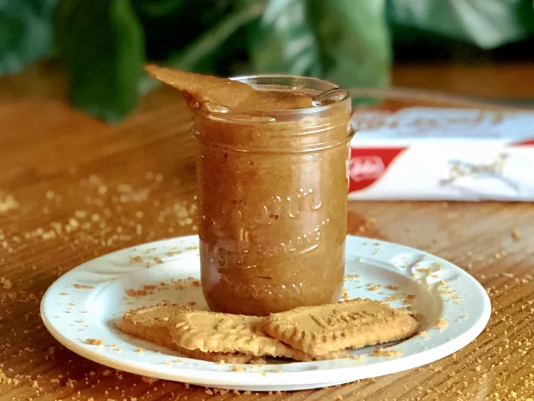

Homemade Cookie butter

Description
There's nothing better than having butter that is as sweet as cookies.
And now you can make your own cookie butter with this easy and simple recipe.
Ingredients
- 1 (8.8 ounce) package speculoos cookies (such as Lotus Biscoff®)
- ¼ cup butter, melted
- ¼ cup oil
- ¼ cup brown sugar
- ¼ cup white sugar
- 2 teaspoons honey
- 1 teaspoon vanilla extract
- ¼ teaspoon salt
- ¼ cup of water
Steps
- Place cookies in food processor and process to fine crumbs.
- With processor running on low speed, slowly add butter, oil, brown sugar, white sugar, honey, vanilla extract, and salt.
- Add water 1 tablespoon at a time until desired consistency is reached.